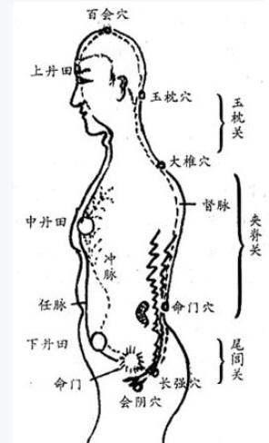
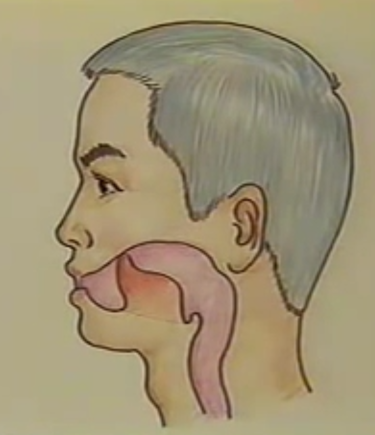
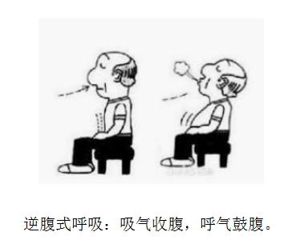
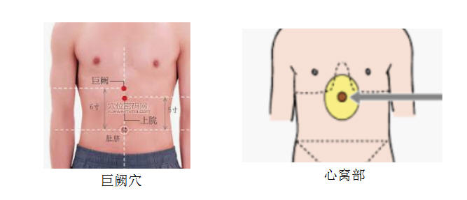

|
“如说修行”网上佛学院 真气运行五步功法生命活动的核心――真气运行。 治病的药就在自己身上，关键是要有恒心、有毅力。
一、绪论真气是人体生命活动的物质基础和动力源泉，是抗病免疫、健身延年的关键。《素问・离合真邪论》曰：“真气者，经气也。”因此，真气充足，身体健康；真气不足，百病丛生；真气消失，生命结束。 真气运行法（简称“真法”），其核心是用五步功法，让人们集中思想，调整呼吸，培养真气，贯通经络，发掘人体内部的固有潜能，发挥自我调节、自我修复、自我治疗、自我重建等一系列功能，达到防病治病的效果。 这是著名中医、养生学家李少波教授根据《黄帝内经》之“全真导气”理论和古代各家行气养生要旨，结合自身实践，经数十年的临床观察、科学实验所创编的一种自练自养的医疗保健养生方法。 真气运行法经过六十余年的临床应用，对80多种久治不愈的慢性病、顽固病、疑难病都有显著的疗效，证实了这一功法的可靠性和功效。该法立足于中医科学，以其简明易学、短期通督、疗效显著、无副作用、老少咸宜等特点，深受医学界、科学界和广大民众的好评。 五步三段真气运行之功法，分为五步，共有三大修炼阶段。 五步功法真气运行法之功法，分为五步： 第一步、呼气注意心窝部； 第二步、意息相随丹田趋； 第三步、调息凝神守丹田； 第四步、通督勿忘复勿助； 第五步、元神蓄力育生机。 三大阶段真气运行法的修炼，共有三大阶段： 一、炼精化气：五步功法中的第一、第二这两步，是调整呼吸推动真气，使体内真气集中于丹田。这个阶段古称为“炼精化气”。这是第一阶段，也是初级阶段。 二、炼气化神：五步功法中的第三、第四这两步是把丹田积足的真气，冲通督脉逆运而上，直达脑海，恢复和增强大脑的功能，提高大脑皮层的保护性抑制力量。这一段叫做“炼气化神”，是中级阶段，身体的变化比较明显。 三、炼神还虚：五步功法中的第五步及其后续练功，功夫更加纯熟精练，由于经络畅通无阻，功中产生的各种触动现象也都逐渐平静，越来越提高了真气运行的规律性。机体功能增强，活力旺盛，大脑皮层的保护性抑制力量发挥得更好。因此静境更加明显，清清静静，心如止水。这一阶段叫做“炼神还虚”，属于真气运行的高级阶段。 这五步功法，练通小周天、大周天，经过炼精化气、炼气化神、炼神还虚三个阶段，可获得防病治病，健身延年的效果。机体生理功能呈现后天返先天的变化，继续锻炼，原则上是以功为法，以静为务，以守为成，向炼神还虚的高级阶段迈进，冀以达到“长生久视，返璞归真”的终极目的。 〔任督二脉〕任脉和督脉。任者总任一身之阴，督者总督一身之阳。打通“任督二脉”，气血就通畅。〔任脉〕从唇下承浆穴，沿着身体前面正中央，到人体正下方双腿间的会阴穴，这条经脉就是任脉。任脉总管六条阴经，循行于腹部正中，对一身阴经脉气具有总揽、总任的作用，调节阴经气血，为“阴脉之海”。〔督脉〕督脉则是由会阴穴，向后沿着脊椎往上走，到达头顶百会穴再往前穿过两眼之间，到达口腔上颚的龈交穴。督脉总管六条阳经，对全身阳经脉气具有统率、督促的作用，只要是阳气衰弱都可以在督脉上找到合适的穴位进行治疗。〔舌抵上腭〕练气功时“舌顶上颚”，就是让任脉与督脉相接，被称为“鹊桥”。
〔小周天〕先通过炼精化气，打通任督二脉。真气从下丹田开始，沿会阴穴、尾闾上行，过夹脊、玉枕，经百会，下鹊桥，再沿任脉下行至丹田。如此按照任督二脉循环运行，称之为“小周天”。〔鹊桥〕舌抵上腭就叫鹊桥，它把沿督脉来的真气接引下来，沿任脉回到丹田。

〔大周天〕是在小周天修炼的基础上，当真气在丹田发动时，丹田部位会产生一股热气流的感觉，然后让意念导引这一股暖气流经奇经八脉，十二经络流经全身，按气机升降开合的规律在全身循环运行，日久功成，是为“大周天”。〔久视〕不老，耳目不衰。形容长寿。 练功姿式初学真法要有正确的姿势，作为初学者的规范。练习真气运行有行、立、坐、卧四种形式，其中以坐式为主，其他姿势为辅。为有效地促使真气运行不断进步，除坐式以外，还可随时随地采取多种姿势进行。
坐式：坐式有盘腿坐和垂腿坐两种姿势，主要按照个人习惯和环境条件，自行选择。一般认为盘腿坐过于形式化，而且腿容易酸麻。因此，一般采用垂腿坐（坐在椅凳上），利于真气运行，容易掌握。 盘腿坐：“双盘式”是把左脚放在右大腿上面，再把右脚搬到左大腿上，两手相合置于小腹前面。这个坐法只是为了坐得稳固不易动摇，但没有相当功夫不易做到。“单盘式”是把右腿放在左腿上面，手势如前法。这比双盘易于做到。“自由盘腿”是将两腿互相交叉而盘坐，是一般人习惯用的坐式。 垂腿坐：椅凳的高度，以坐下来大腿面保持水平为宜。坐在椅凳的前面三分之一上（不要把座位都坐满，或把身子靠在椅背上），大腿根部以下都露在椅凳外。小腿垂直，与大腿成90°夹角。两脚平行着地，两膝间的距离以能放下两拳（拳眼相对）为准。两手心向下，自然的放在大腿面上。两肩松垂，腰须直，勿用力，下颌略向回收，头顶如悬。体态以端正、自然、放松为标准。这种坐式，既便于掌握，不易疲劳，又有利于真气的运行，故为现代习惯采用之姿势。 卧式：右侧着床伸下腿屈上腿，右手曲肱将手置于头之前下侧枕上，左手放在左胯上。
站式：站式有各种姿势，在这里不一一介绍。只介绍方便易行的一个姿势，以为坐功之辅助功。两脚并立，两手覆于丹田（左手掌心覆于丹田，右掌心覆于左手背上）。松肩垂肘，含胸拔背，虚心实腹，目若垂帘。 行式：行路和散步时，目视前方三五步处，意守鼻尖，神不外驰，四步一吸，四步一呼。如能长期锻炼此法，对走长路很有帮助，可以久行不倦。
五官要求口腔：口唇自然闭合，上下齿相对，将舌上卷约成九十度，用舌尖轻轻地抵往上腭（如下图）。唾液分泌得多了，将舌放下慢慢地咽下去，然后继续舌抵上腭。
 眼睛：微闭内视，练哪一步功就内视哪一部位。如第一步注意心窝部，就内视心窝部。 耳朵：两耳留意自己的呼吸，使呼吸不要发出粗糙的声音，但也不要造成憋气，保持从容自然，这是集中思想的好方法。 呼吸要求由于呼吸是推动真气运行的动力，因此在真法的修炼中非常重视呼吸。在修炼真法的过程中，是鼻呼鼻吸。在整个五步功法中，都只是注意呼气，而不要去管吸气，任其自然，这样便无流弊。“只管呼气，不管吸气”这一点很重要，以免出现憋气等不良现象。丹田真气充实后，自然地贯通督脉。那时即感到一呼真气入丹田，一吸真气沿督脉入脑。这是真气的自然活动状态，无须追求。呼吸则绵绵密密，若存若无，呼吸表现得更加自然。这时对呼吸就无须注意了。 关于呼吸方式，本文介绍的是逆腹式呼吸，如果采用逆腹式呼吸有困难，就采用一般人在日常生活中所使用的胸式呼吸。 〔胸式呼吸〕以肋骨和胸骨活动为主，吸气时胸腔扩大，呼气时胸腔收缩，腹部始终保持平坦。胸式呼吸的害处，详见《腹式呼吸》一文中所附“胸式呼吸的害处”。 下面介绍逆腹式呼吸： 逆腹式呼吸，又叫丹田呼吸。吸气时收腹，紧缩会阴；呼气时鼓腹，放松会阴。刚开始用逆腹式呼吸来练真气运行五步功法时，不要去追求细、匀、深、长，只要腹部动起来就可以，因为这时任脉尚未通畅。随着功夫深入，呼吸自然就会愈来愈深长，每分钟的呼吸次数会愈来愈少，逐渐地做到细、匀、深、长。初练习时，小腹的凹凸可以较为明显。纯熟之后，则可将凹凸的幅度减小，渐而至“似有非有，似无非无”之境界。此时，全身舒展通畅。

〔会阴〕会阴穴是人体任脉上的要穴。它位于人体肛门和生殖器的中间凹陷处。会阴穴与人体头顶的百会穴为一直线，是人体精气神的通道。百会为阳接天气，会阴为阴收地气，二者互相依存，相似相应，统摄着真气在任督二脉上的正常运行，维持体内阴阳气血的平衡，它是人体生命活动的要害部位。李时珍在《奇经八脉考》中论述道：会阴穴是任脉、督脉和冲脉的交汇处，是奇经八脉上的重要穴位，此穴是活力萌发的源头，维护着人体气血阴阳平衡，故而也是长寿要穴。会阴穴是中医的称呼，道家称为“阴跷”，在瑜伽学派里称为“海底轮”，各门各派都对这个部位的修炼大加赞誉。 逆腹式呼吸法是在呼吸时改变腹腔容积，而其着眼点并不是吸入呼出的空气，而是真气（内气）。所以，逆腹式呼吸法在名义上是一种呼吸空气的方式，实质上则是内气的“呼吸”（升降、鼓荡）。逆腹式呼吸对于身心健康非常有益，有的人单练逆腹式呼吸，就治愈了许多慢性疾病。为了祛病延年，在日常生活中要尽可能多地做逆腹式呼吸。 如果还不习惯于逆腹式呼吸，就要抽时间单独练习这一呼吸方式，一有机会就练几分钟，每天练的次数愈多愈好，逐渐做到轻松自然，直至形成习惯。 在学习的初期，可以吸气时默念“收”字，呼气时默念“鼓”字，这样来帮助做到“吸气收腹，呼气鼓腹”这一动作。 怎样收功真气运行法的基本守窍是丹田，而且没有由丹田向外引气，故不作气返丹田的收功。每次练功结束前，先放松意念，手掌相对摩擦至热，如洗面状摩面部数周，然后用十指梳头片刻，使精神恢复常态后，慢慢起身活动即可。 二、功法真气运行的规律是：在宁静虚无的气功态下，真气就在丹田产生和会聚，沿任督十二经脉运行，自生自化，调节机体，祛病延年。因此，修炼真法的关键就是进入并保持宁静虚无的气功态。 《内经》云：“恬淡虚无，真气从之，精神内守，病安从来。”因此，真气运行法自始至终之练功要旨，都是克服杂念而入静。大量实践证明，练功者谁入静好，谁功力增长就快。所以，不论练那一步功，都要在入静上下功夫。 〔恬淡虚无〕这是“念头不起，物我两忘，恍惚杳冥”的境界。“恬淡”，宁静闲适；“虚”，物我两忘；“无”，无有妄念（念头不起）。〔真气从之〕当处于“念头不起，物我两忘，恍惚杳冥”的境界，真气自然就循经运行，调节机体，祛病延年。〔精神内守〕人的神、气本为一体，神驰于外，气亦游于外，神、气外泄，身体耗损。所以，要将神、气持守在内，以保持充沛的真气，令机体抗病能力强盛，疾病就无从发生，就能达到健康长寿的目的。
每一步功完成的标志如下： 第一步功（呼气注意心窝部）：心窝部的气感自然向下丹田移动。 第二步功（意息相随丹田趋）：下丹田有明显气感。 第三步功（调息凝神守丹田）：出现会阴跳动、尾闾气动的现象（这说明真气已进入督脉）。 第四步功（通督勿忘复勿助）：通督。
每次练功开始时，都先两眼微闭如垂帘，漏出一线微光，轻轻地注视鼻尖，精神内敛，把心静下来，然后依照功法修炼。 第一步 呼气注意心窝部心窝部的位置，即心口部，是以巨阙穴为中心的一个范围。这是一个部位，而不是指某一点。

方法：练功准备就绪，即微合双眼，先注视鼻尖片刻，接着闭目内视心窝部，耳听呼吸，勿使有声。每一次呼气，意念随着呼气自喉部下达心窝部 ，至于吸气，则听其自然，不加注意。因为体外大气压与体内肺内压的压力差，呼出多少浊气，就会吸入多少新鲜空气，这是顺乎生理的自然调息法，也就是真气运行法特定的调息法。呼吸是自然地呼吸，而不要有意识地延长呼气或吸气，否则会出现憋气等不舒适的现象。练功时若有杂念，要用数息法制之：只须数呼气之数，从 1-10 ，再回头从 1-10 ，反复进行，杂念平息，即不必数息。 〔自然地呼吸〕就是不要故意去控制呼吸的深浅、节律等，顺其自然就是了。随着功夫的深入，真气旺盛了，呼吸则若存若亡，绵绵细长，次数自然减少了。这种自然的过程，使得吸入的氧气更多，因而不仅不感憋气，反而更舒服。应当明白的是，呼吸次数的多寡不是可以人为地增减，要自然而然。如果人为地追求深呼吸、慢呼吸，是有悖生理的。 时间：如果要如期完成第一步的练习，在时间上就要有一定的安排。假若条件许可的话，每天固定时间练功，养成习惯，对稳定思想更有帮助。没有固定的时间也不要紧，只要抽空抓紧练功就行。要求每日早、中、晚练习三次，每次二十分钟。如认真操作，一个星期左右就可完成第一步的功候。 反应：练功到三至五天，感到心窝部沉重，再往后，每呼气时，感觉到有一股热流注入心窝部，这是真气集中的表现。有了真气的集中，就给第二步功打下了基础。 效果：开始几天由于不习惯，姿势也不够准确，有的人会感到头晕，腰背酸痛，呼吸也不自然，舌尖抵不住上腭等，这都是自然的现象。不要有顾虑，只要按要求坚持锻炼慢慢就会好了。 当心窝部的气感自然向下丹田移动，就标志着第一步功完成。 第二步 意息相随丹田趋这里的丹田是指下丹田。下丹田乃任脉之关元穴，在肚脐下三寸（四指宽）处，亦即小腹正中部位，为藏精之所。下丹田是锻炼、汇聚、储存真气的主要部位。
“意息相随丹田趋”是说：意念（意）跟随着呼气（息）下行，把真气（表现为心窝部的温热感）导入丹田。这一步的目的就是令心窝部集聚的真气沿任脉下达丹田，以打通任脉。 真气的运行，需要呼吸带动和意念诱导。所以在真气运行法中，呼吸和意念非常重要。真气在经隧中的运行，是由呼吸带动：呼气时，真气向下向外运行；吸气时，真气向上向内运动。 方法：当第一步功法练至每次呼气自觉心窝部发热时，即可意息相随，于每次呼气时，以意引心窝之热气流逐渐向下延伸，一步步趋向丹田。但必须注意轻松自然，不可过分用意和操之过急，用力太大会产生高热而感到不舒服。 时间：依法每天三次，每次二十五分钟或半个小时，十天左右就可以气沉丹田。 效果：由于真气已通过胃区，脾胃功能已有改善。真气沉入丹田后，周围脏器如大小肠、膀胱、肾等都逐步发生生理上的改变，一般都感到食欲增进；大小便异常现象有程度不同的改善。 当下丹田有明显气感时，就标志着第二步功完成。 这时气沉丹田，丹田受到真气的冲击，会有感觉，丹田的部位也就显现出来。然而一瞬间，丹田受冲击或胀热感很快又消失了。丹田有气则开、无气则合，从中丹田（心窝部）沿任脉下趋的真气进入了下丹田，又不足以鼓荡、充实起下丹田，因此丹田中的压力消失或很小，气感旋即消失。但说明真气已下沉丹田，任脉已通，即可转入第三步功的锻炼。 第三步 调息凝神守丹田真气运行五步功法，始终是把意守丹田作为重点。即使在打通任督二脉之后，在一个相当长的时期，仍然是以意守丹田为中心。因此，“调息凝神守丹田”始终是功法的核心。 “调息”，就是把握好气趋丹田的力度。“凝神守丹田”，就是不再注意呼气，而集中思想意守丹田，神不外驰。 〔意守丹田〕把注意力放在丹田这个区域，观照此处。 方法：在第三步功开始时，是用上一步功法（“意息相随丹田趋”）将真气送入丹田。此时用强烈的意念、重而急的呼气（武火发动）。当下丹田真气热感明显、稳定时，就要调整“意息相随丹田趋”的力度，令呼气减缓、气趋丹田的意念放松（文火温养），以保持丹田温热而不发烫，以免丹田过热而耗伤阴液，犯“壮火食气”之弊。进而不再注意呼气而意守丹田（“凝神守丹田”），渐渐达到似守非守，绵绵若存（只要丹田保持温热即可）。因为此时任脉已经通畅，做到了气沉丹田，故只要意守丹田就可以达到丹田充实。火候当以丹田温热而不发烫最为相宜。如感丹田气不足，即用“意息相随丹田趋”将真气补入丹田，令其充实饱满即可。 在“意守丹田”时，也要掌握好意守的强度，即意守时注意力的强度。意守强度太小，杂念难以排除，丹田也难以守住；意守强度偏大，虽然杂念可以减少，但易招致头痛、头胀、精神紧张等不适症状的出现。所以，练功初期意守强度比起“似有似无”应偏大些，精神要放松，以头不胀痛为度，这样有助于排除杂念，帮助入静。随着功夫的深入，可逐渐减小意守的强度。 时间：每天三次或者再多一些。每次半小时以上。这一段是培养丹田实力阶段，需要时间较长，一个月左右可以感到小腹充实有力。 效果：由于任脉通畅，心肾相交，中气旺盛，因此心神安泰，睡眠安静。凡患有心火上炎，失眠多梦，以及心脏不健康的人，都有好转。通过练功不断的给肠胃增加热能，脾胃消化吸收能力增强，体重增加，精神充沛，元气充足，肾功能增强。患有阳痿病症的大有好转，女子月经不调均有程度不同的改善。肾水旺盛，肝得滋荣。因此，在这一阶段，患有慢性肝炎和初期肝硬化的都有明显好转。坚持锻炼，自然痊愈。 〔心肾相交〕心属火，藏神；肾属水，藏精。两脏互相作用，互相制约，以维持正常的生理活动。肾中真阳上升，能温养心火；心火能制肾水泛滥而助真阳；肾水又能制心火，使不致过亢而益心阴。这种关系，也称水火相济。心和肾任何一方的阴阳失调，均可导致心肾之间“水火既济”的关系破坏而出现相应的病症，称之为“心肾不交”或“水火不济”。 当出现会阴跳动、尾闾气动的现象，这说明真气已进入督脉，就标志着第三步功完成。 第四步 通督勿忘复勿助方法：接上步（“调息凝神守丹田”），当丹田真气充实到一定的程度，即会沿脊柱上行。此时，意念要跟随着气感，气行则随其行、气止则随其止（勿忘），而不要用意念向上导引（勿助）。因为上行之快慢完全取决于丹田中真气充实的程度，丹田中真气越充实，上行的力量越大，速度越快。反之，则上行中止，甚或倒退；待丹田中真气充实后，自然会继续上行。若急于通关，向上导引，就和丹田力量脱节，揠苗助长，这是非常有害的。当真气上行至脑后“玉枕关”，屡屡欲上难通过时，可用内视头顶法，一般即可冲过玉枕关。 这步功的关键是：勿忘勿助，顺其自然。通督用不着自己操心，只要丹田真气充实有力量，它自己就会通过的。若是真气停留在某处，这说明丹田真气还不充足，还达不到通督的力量，就要重新按第三步功（“调息凝神守丹田”）修炼，培养丹田的力量，以期通督。如果硬往上导引，非但无益，反而有害。自学练功者，遇到这个情况，千万不要找人“帮忙”，那样是于事无补的。只有靠自己按第三步功（“调息凝神守丹田”）修炼，才是唯一的办法。 时间：每天练功次数可适当增加，每次的时间也应延长到四十分钟或一小时左右。每个人的情况不同，通督的时间和力量不可能一样。有的人一刹那就通过了，而且力量很猛，震动很大。有的人通督时间稍长，并且力量也不大。大多数在十天左右通督。 效果：督脉通畅后，一呼气，真气沿任脉下入丹田；一吸气，真气沿督脉上达百会。 一呼一吸形成任督循环，养生界称此为“小周天”。只有在这种情况下，才能感觉到“呼吸精气，独立守神”的实际情况。真气不断地补益脑髓（还精补脑），大脑皮层的本能力量增强。凡是由于肾精亏损和内分泌紊乱所引起的头晕耳鸣、失眠健忘、腰酸腿软、月经不调、精神恍惚、易喜易怒、心慌气短、性欲减退等神经官能症状，都可得到改善。长期坚持，可以康复。因练功经络通畅，有些多年不愈的顽症也可霍然而愈，效果明显。一般情况表现为精力充沛，身体轻捷。 通督的情景因人而异，有的玉枕有“轰”的一声，有的像放炮一样，也有的如同蚁爬或感到一条线慢慢通过。这只是力量大小的差异，只要感觉气流通过了玉枕关，就是通督了。通督后气流沿任督二脉运行，丹田的感觉就不明显了。 通督，就标志着第四步功完成。
任脉为诸阴经之海，督脉为诸阳经之会，任督畅通，十二经络可以渐次畅通无阻，病患就无以容留，健康长寿就有保障。庄子曰：“缘督以为径，可以保身，可以全生，可以养亲，可以尽年。”（《庄子・养生主》） 第五步 元神蓄力育生机所谓元神，就是大脑调节管制的本能力量，与识神对立。识神是有意识的精神状态。元神和识神是体和用的关系，元神为体，识神为用。无念时是元神，如果念头稍动，元神即化为识神。第四步功已通督脉，肾气不断灌溉脑髓，元神的力量不断得到补充。心主神明，心气上照于脑，才能发挥其全面的调节管制作用。 “元神蓄力育生机”的含义是，高度入静“恬淡虚无”的精神意识状态，此即元神，可以使生命的物质和动力“精、气、神”蓄集化合，从而孕育出旺盛的生命机能。这步功（“元神蓄力育生机”）是在高度入静的状态下进行的。 〔入静〕这是指在气功锻炼过程中，在思想安静、意念集中的基础上出现的清醒，保持意念专一，轻松舒适的一种练功境界。入静既不同于一般的清醒状态，亦不同于入睡。它不是万念俱息，也不是昏沉迷糊，而是一念代万念，还保持着练功的意念。对练功者来说：如果在练功过程中，练功的意念都没有了，就会象船失去了舵，以至在恍惚的情况下出现偏差，这是需要注意的。 方法：任督循环形成后，一般仍是意守下丹田，这时对呼吸就无须注意了。通督后各个经脉相继开通，如果头顶百会穴处有活动力量，也可以意守百会。灵活掌握，这叫“有欲观窍，无欲观妙”。随着功夫的进展，自然会强身健体，开发智慧，有更好的美妙境界出现。 〔上丹田〕上丹田是百脉会合之所，常守此窍，可以开发智慧，保全性命，溶通混元。上丹田真气活跃，大脑的本能力量发挥很好，对全身的调节管理就越好。〔有欲观窍，无欲观妙〕这是说：练功的时候，如果有杂念，即意守下丹田，用一念代替万念；而入静之后，上丹田有了反应，就可以静心地守住上丹田，感受那种玄妙之境。 时间：每天三次，或更多些，每次一小时或更长一些。总的说时间越长越好。大约一个月左右，身体内的各种触动现象才能逐渐消失，只剩下下丹田和上丹田的力量更加集中旺盛的现象。 效果：根据身体的表现，尤其是丹田与头顶百会穴互相吸引的磁性力量说明，大脑皮层的本能力量增强，内分泌协调而旺盛。这种力量有形有色，功夫越深，表现的越明显活泼，对全身的生理生活机能调节就更好，真气也就更加充实，不断地补偿和增强身体的代谢机能，可充分发挥机体的潜在力量。因活力旺盛，抗病免疫力就增强了，一般致病因素就可减少甚至避免，原有的沉疴痼疾也可以得到改善或痊愈。坚持锻炼，就可以达到身心健康、益寿延年的效用。
以上五步，是真法静功锻炼过程中的基本概况。在实践中，由于每个人的体质不同，具体条件又不一样，所以效果与表现也是因人而大同小异。鉴此，练功时既要顺乎自然，灵活运用，不能刻意拘执；又要本着一定的要求，耐心求进，持之以恒，不可自由放任，实为成功之要诀。 三、结语练功须知练真法，必须树立坚定不移的信心，持之以恒，勿求速成，也不要畏难而退。在锻炼期间，要顺乎自然，不要执意妄想，勉强追求。否则，欲速则不达，越是一意追求，有急躁情绪，就越是不进步；意态越是融和自然，真气发动就活泼，进步就越明显。因为执意妄想就成了扰乱真气运行的杂念。“恬憺虚无，真气从之”正是这个意思。 在练功过程中，因为身体上发生很多生理上的变化，出现各种触动现象，要泰然处之，不必惊慌失措，也不要执意追求，稍时便会消失的。 1、初习真法，因要思想集中，有一个比较安静的环境为好。但是，不要过份强调这个问题。在练功时，要避免他人干扰。若练功中有意外干扰（如突然声响、有人急叫或闯进练功室内等），则不必惊慌，须慢慢放松意念。临时收功后再慢慢起坐应付，待恢复平静后再补练。调息时，鼻吸鼻呼，注意呼气，吸气任其自然，不可用口呼吸。 2、注意不要在大饥、大饱、大怒、大惊等情志冲动时勉强做功。当风、雨、雷响时暂勿坐，恐怕给精神以猛烈刺激，发生不适。 3、意守丹田是真法始终保持的一个准则。当丹田真气充实到一定程度，会自然地顺着经络运行。这种运行的力量，是基于丹田力量的大小而定的。勿用意念导引，任其自然，要行则行，要止则止，主观导引是会出偏差的。 4、用本法者，尚未通关之前，须保存精力，节制房事，以免影响练功进程。女性如遇例假，不宜意守下丹田，可守中丹田（心窝部）。怀孕前期（1-3个月）不能练，中后期可以练。 练功八触在锻炼五步功法的过程中，体内的能动现象是多种多样的，古人总结归纳了八种，称之为“八触”。时而感到身体很“大”、时而感到身体很“小”，有时感到身体很“轻”、有时出现身体“重”如巨石的现象，有时感觉身体很“凉”、而“热”的感觉出现的最快也最多，还有“痒”、“麻”的感觉。除了以上的“八触”，实际功中的动态比这些还要多，如自发运动，光感，还有残、异等现象。 上述现象都是真气在体内不同形式活动的表现，都是积极有益的。有些人遇到这个现象，延医诊治，医者不知，乱投药石，这是有害的。有人不明白这个道理，成为精神负担。有人好奇，追求这些现象，越注意越厉害，以致不能控制。凡此种种，都是没有讲清道理的关系。懂得了真气运行的规律，就可以避免不正确的思想和行为。遇到以上触动现象，既不必好奇追求，更不要惊慌失措，只要安静地坐功，意守丹田，过些时候就平复了。 动静关系动与静，是宇宙间事物运动中对立统一的两个方面。真法有效地利用了静与动的关系，促进真气运行，使机体更好地发挥生命活力，以达到祛病延年的目的。 有动必然有静，有静必然有动。静极生动，动极复静。静是动的基础，动是静的力量表现。动是绝对的，静是相对的。在人体的生理活动中，也不能脱离这个规律。形体属阴主静，真气属阳主动。气离形则无所依附，形无气则成块然死物。必须阴阳互根，动静相育，形气并存，才是活泼泼的一派生机。 真气运行五步功法所说的静，就是使身体安静下来，全神贯注地调整呼吸，推动真气运行，冲通任督，贯通经络。在这个过程中，体内的触动现象是多种多样的，身体各部机能处于积极主动、生意盎然的状态。这哪里是什么静和定，这不过是一种非常旺盛、非常自然、非常有规律的真气运行罢了，这叫静极生动。所谓的静只能说是对外界反应或思维活动暂时的相对的静。 生命体的动是绝对的，静是相对的。练静功者，虽然没有姿势活动，也是由有为而至于无为的。练功过程中，培养真气贯通经络，前三田、后三关都有非常激烈的活动。尤其在攻后三关时，真气活动的力量不以人的意志为转移，而是被一种强大的冲击力量控制了自己。这种力量则是由静极生动和动极复静而形成的。人们对静极生动是熟知的、是欢迎的，知道必须依靠这个动力去攻关，但对动极复静的现象则茫然无知，产生疑虑而不知所措。其实事物动到一定的程度，必然要静下来休整生息，以利再动。这是日常的自然现象。真气活动一段时间后必须要安定静止的休整培养出更大的力量。因此，在练功过程中突然发现丹田感觉消失或真气行行停停等现象，都是正常的，不要有疑虑。只要安心地继续培养丹田力量，自可使真气再次活跃起来。 总之，真气运行法炼精化气、炼气化神和炼神还虚等层次，都是发挥了静极生动、动极复静、动静相育的自然规律完成的。 实践疗效经临床验证，对高血压、心脏病、糖尿病、肺结核、肺气肿、肝胆疾病、早期肝硬化、肠胃病、泌尿生殖系统疾病、慢性肾炎、类风湿性关节炎、颈椎病、神经官能症状、内分泌紊乱、顽固性皮肤病等80多种功能性和器质性病变均有显著疗效；更可喜的是还能激发人体干扰素，提高人体免疫功能，对癌症早期患者的治疗和术后恢复都有很好的作用。因此，真气运行学五步实践对治愈各种慢性疑难病症、顽症效果明显，对急性疾病亦有疗效；而且标本兼治，没有任何副作用。
参考阅读：
|